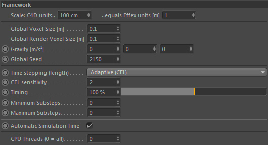
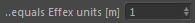
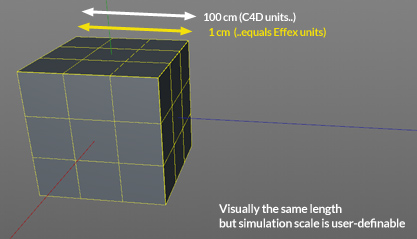
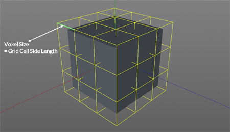
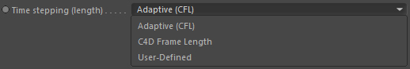

Framework

Scale: C4D units.. / ..equals Effex units [m]

The Effex scene has an own unit system to ensure physically correct time and space integration of any components in the framework.
The units (SI-Units) used in the simulation are always given in meters.
Example
Imagine you have a cube inside of Cinema 4D that is 100cm in size. But in the simulation (representing the real physical world) you want this cube to represent a size of 1cm. Your settings therefore would be [100] and [0.01].

...
Global Voxel Size [m]

Imagine a 3D grid. A grid is partitioned into small grid cells. A Grid cell is also called Volume-Pixel aka Voxel (it's the 3D version of a pixel! Which is just a simple cube)
and the size of each voxel is defined with this setting. This setting is only applied in the Cinema 4D editor.
The voxel size is THE fundamental setting that affects the quality, resolution and performance of the whole framework and any
objects that work with a grid (for example fluid dynamics, volumes, surface reconstructor, emitters..).
Lower values give a higher resolution (more voxels fit into a grid, so more details are possible)
but also take more memory and take longer to calculate. This is a quality speed trade-off.
Keep in mind, changing this setting will re-initialise the whole simulation framework.
Global Render Voxel Size [m]
This defines the voxel size of the framework during rendering (either to the picture viewer or via NET).
See Global Voxel Size for details.
Gravity [m/s²]
This defines a global gravity acceleration constant. Objects in the framework can (but must not) use this.
The liquid/viscous dynamics or the spray particles for example by default use this setting. For better local control
you can set this to 0,0,0.
Global Seed
This is a global seed value for any random settings inside of the framework. Objects can have a local seed value in their
settings (Attribute Manager) as well.
Time stepping (length)

Stepping simply means going from one frame to the other (stepping through time in intervals), just as Cinema 4D steps through the timeline frame by frame.
However, in a dynamic framework the stepping can (and sometimes must) be different to a full frame. It can contain
substeps (fractions of a frame). The length of each of these substeps can be arbitrary (but they will always sum up to a full frame).
This defines how the time stepping is done in the framework. There are different modes:
Adaptive CFL
The Courant-Friedrich-Lewy condition makes sure that certain algorithms remain stable but also accuracy is linked to stepping.
Roughly spoken, the CFL condition verifies that grid data does not move further than the size of 1 voxel within a single time step.
It will adaptively change the length of substeps to meet this criteria. This may result in more or less substeps taken in a single C4D frame.
This is the prefered method for any simulations.
See Minimum Substeps and Maximum Substeps.
C4D Frame Length
This mode will make the length of a time step to be the length of a C4D frame (same as CFL). but the substepping is not
adaptive instead the user directly controls the amount of substeps. The length of the taken substeps are therefore always uniform.
User-Defined
The user defines the length of the time step explicitly in seconds per frame (see Explicit Timestep). The length of taken substeps are always uniform.
CFL sensitivity
(only available if Time Stepping::Adaptive (CFL))
Roughly spoken, the CFL condition verifies that grid data does not move further than the size of 1 voxel within a single time step.
With this setting you can change the allowed length of grid data motion before the CFL mode starts to adaptively subdivide the time step length.
A value of 2.0 allows movements of the length of 2.0 voxels within a single step etc.
This can reduce the amount of substeps taken and therefore improve performance time.
However, if you allow your data to move for example 3 voxels per time step, it could easily happen that obstacle volumes that are only 2 voxels thick are missed
(and the liquid simply goes through it).
To compensate this you may either increase the obstacle's volume thickness or decrease the CFL sensitivity.
Timing
If you want to slow down or speed up the simulation, you can use this slider. It is a convenience slider, that will affect all objects in the framework.
This allows bullet time effects, especially nice for slow-motion shots. A timing of 0% will completely stop the simulation.
Explicit Timestep [sec/frame]
(only available if Time Stepping::User-Defined)
If your C4D scene runs at 25 Fps, the length of a C4D frame is normally 1/25 = 0.04 seconds. To double the length (and therefore double the simulation speed!)
you would set this value to 0.8. If you set it to 1.0, it will calculate a full second within 1 C4D frame.
Minimum Substeps
Defines the minimum amount of substeps the time stepping uses.
Maximum Substeps
Defines the maximum amount of substeps the time stepping uses.
Automatic Simulation Time
If activated the simulation time will automatically adapt to the temporal extents of the Cinema 4D scene (usually all frames are used).
You can explicitly set the simulation length if deactivated.
See From [Frame] and To [Frame].
From [Frame]
Allows to set the frame when Effex starts processing (evaluating nodes).
To [Frame]
Allows to set the frame when Effex stops processing (evaluating nodes).
CPU Threads (0 = all)
Let's you decide how many CPU threads you would like the framework to use. 0 means all your available CPUs (incl. HyperThreading)
are used to run the framework. Sometimes, especially with lower resolutions it may be advantageous to use less Threads than
available because starting the threads may take longer than running their tasks! So less CPUs may provide some better performance.
This is very scene dependant but generally higher resolutions (lower voxel sizes) benefit from more CPUs, so for final rendering you
should probably set this back to 0 (assuming you are using a lower voxel size for your final simulation).